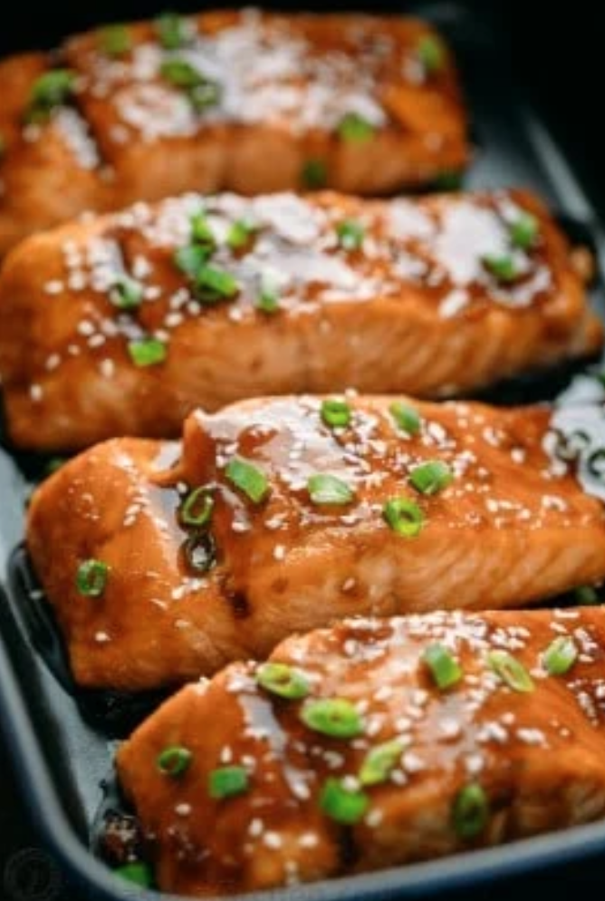

Teriyaki Salmon

Description
A flaky, juicy, delicious teriyaki glazed salmon recipe. No lengthy marinating required.
Ingredients
For the Teriyaki Salmon:
- 2 lbs salmon filet sliced into 2" wide slices
For the Teriyaki Sauce:
- 3 tbsp teriyaki sauce
- 3 tbsp hoisin sauce
- 3 tbsp soy sauce
- 1 tbsp white vinegar
- 1 tbsp sesame oil
- 1⁄3 cup packed light brown sugar
- 2 large or 3 medium garlic cloves, minced
- 2 tsp freshly grated ginger, or 1⁄,2 tsp ground ginger
- Sesame seeds and chopped green onion to garnish, optional
Recipe
- Grease a large baking sheet (cover with foil and then grease for easier clean-up). Preheat oven to 400 ºF.
- Combine sauce ingredients and stir until brown sugar is dissolved.
- Place individual salmon slices in a large mixing bowl. Pour the sauce over the salmon, cover with plastic wrap and let marinate at least 20 minutes (at room temp or refrigerated).
- Transfer salmon to baking sheet (keep the marinade). Bake at 400 for 14-16 min or until salmon is flaky and cooked through.
- While salmon is baking, transfer remaining marinade to a small sauce pan and bring to a boil then reduce heat to a simmer and cook, stirring occasionally until slightly thickened (3-4 min) then remove from heat.
- Once salmon is out of the oven, brush with teriyaki syrup, then garnish with chopped green onion and sesame seeds as desired.